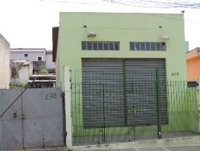
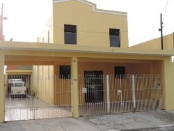

Assembléia de Deus - Sede Setorial
Pastor Adeli Geraldo do SantosAv. Antônio Bernardo Silvestre, 149 - São Miguel Paulista
CEP: 08011-380 - São Paulo - SP
T: (11) 2297-2571 Ver no mapa
Assembléia de Deus - Jd. das Camélias I
Rua: Valéria Aparecida Marcondes,61 - Vila JacuíCEP: 08050-640 - São Paulo - SP
Ver no mapa
Assembléia de Deus - Jd. das Camélias II
Evangelista Aristides Jesus de OliveiraRua: Carvalho do Brasil, 17 - Vila Jacuí
CEP: 08050-290 - São Paulo - SP
Ver no mapa

Assembléia de Deus - Jd. das Camélias III
Presbítero Donizeti Erminio de OliveriaRua: Tamaquaré,20 - Vila Jacuí
CEP: 08050-720 - São Paulo - SP
Ver no mapa
Assembléia de Deus - Cid. Pedro José Nunes
Evangelista Jonas Pereira de CarvalhoRua : Flor-do-Baile,6 - Jd.Pedro José Nunes
CEP: 08061-260 - São Paulo - SP
Ver no mapa
Assembléia de Deus - Chácara III Meninas
Presbítero Jair Alves da SilvaRua Redenção dos Gurguéia, 44 - Jardim Helena
CEP: 08090-230 - São Paulo - SP
Ver no mapa

Rua: Manoel Castro de Mendonça,232 - Vila Curuçá
CEP: 08151-730 - São Paulo - SP
Ver no mapa
Assembléia de Deus - Jd. Campos II
Presbítero Marcelo Ferreira AlvesRua: Manoel Castro de Mendonça,232 - Vila Curuçá
CEP: 08151-730 - São Paulo - SP
Ver no mapa
Assembléia de Deus - Jd. dos Ypês
Pastor Nailton Moura da SilvaRua:Caraipê das águas,106 - Vila Curuçá
CEP: 08161-000 - São Paulo - SP
Ver no mapa
Assembléia de Deus - Jd. Helena I
Rua:Cachoeira do Brumado,290 - Jardim HelenaCEP: 08090-520 - São Paulo - SP
Ver no mapa
Assembléia de Deus - Jd. Helena II
Evangelista Hilquias Santos freireRua: Salsa Brava,234 - Jardim Helena
CEP: 08081-020 - São Paulo - SP
Ver no mapa
Assembléia de Deus - Jd. Jaragua
Evangelista José Dias FerreiraTravessa Capricho Rústico, 95 - Vila Curuçá
CEP: 08160-220 - São Paulo - SP
Ver no mapa
Assembléia de Deus - Jd. Lapena
Presbítero Cícero Amaro Alves da PaulaRua:José Gori,98 -
CEP: 08071-200 - São Paulo - SP
Ver no mapa
Assembléia de Deus - Jd.Maia
Pastor Robson Verissimo da SilvaAv.Prof. Alípio de Barros,297 - Jardim Helena
CEP: 08180-000 - São Paulo - SP
Ver no mapa
Assembléia de Deus - Jd. Miragaia
Evangelista José de SantanaRua: Isabel Morales Oliveira Miragaia, 69 - Vila Curuçá
CEP: 08061-300 - São Paulo - SP
Ver no mapa
Assembléia de Deus - Vila. Monte Santo
Pastor Cicero Canuto Da SilvaAv.César Augusto Romaro,98 - Monte Santo
CEP: 08062-000 - São Paulo - SP
Ver no mapa
Assembléia de Deus - Jd. Nazaré
Rua:José Felipe do Amaral,341CEP: 08140-600 - São Paulo - SP
Ver no mapa
Assembléia de Deus - Jd. Nazaré II
Evangelista Elionaldo dos Santos PereiraRua Amanhecer,106
CEP: 08151-290 - São Paulo - SP
Ver no mapa
Assembléia de Deus - Jd.Planalto
Presbítero Ronaldo Santos CarvalhoRua:Américo Sugai,952 - Vila Jacuí
CEP: 08060-380 - São Paulo - SP
Ver no mapa
Assembléia de Deus - Jd. Robrú
Pastor Jurandi Sousa CostaRua : Samuel Pedro Santos, 84 - Vila Curuçá
CEP: 08150-350 - São Paulo - SP
Ver no mapa
Assembléia de Deus - Jd. Santa Maria
Pastor Antonio Coelho da SilvaRua:Flor da Seda,47
CEP: 08050-090 - São Paulo - SP
Ver no mapa
Assembléia de Deus - Jd.São Martins
Evangelista Edivaldo Angelo da SilvaAv José Martins Lisboa, 1300 - Jardim Helena
CEP: 08081-010 - São Paulo - SP
Ver no mapa

Assembléia de Deus - Jd. Senice
Presbítero Manuel Pereira da RochaRua: Doce Allisso, 73
CEP: 08150-999 - São Paulo - SP
Ver no mapa
Assembléia de Deus - Jd. Silva Teles
Evangelista Marcos Araujo de AmorimRua: Gerhadt Holtz, 16b - Vila Curuçá
CEP: 08160-520 - São Paulo - SP
Ver no mapa
Assembléia de Deus - Lageado
Evangelista Domingos Carlos PavãoRua: Ilha de Tatuoca,135 - São Miguel
CEP: 08042-130 - São Paulo - SP
Ver no mapa
Assembléia de Deus - Limoeiro
Pastor Ivan Pereira de SouzaAv. Augusto Antunes,78 - Vila Jacuí
CEP: 08051-370 - São Paulo - SP
Ver no mapa
Assembléia de Deus - Pantanal
Presbítero Everaldo Gomes de AraujoRua:Sócrates,72 - Campo Grande
CEP: 08081-710 - São Paulo - SP
Ver no mapa

Rua: Gonçalves Ribeiro,858 - Pq.Paulistano
CEP: 08080-090 - São Paulo - SP
Ver no mapa
Assembléia de Deus - Pq Paulis
Pastor Aparecido Donizete dos SantosRua: Gonçalves Ribeiro,858 - Pq.Paulistano
CEP: 08080-090 - São Paulo - SP
Ver no mapa

Assembléia de Deus - Pq Real
Evangelista Ismael Clarindo Candido da SilvaRua: Camões,110 - Jardim Helena
CEP: 08081-420 - São Paulo - SP
Ver no mapa
Assembléia de Deus - Santa Rita Curuça
Pastor João Vieira da SilvaRua: Osório Franco Vilhena,842 - Vila Curuçá
CEP: 08030-590 - São Paulo - SP
Ver no mapa
Assembléia de Deus - Jardim da Casa Pintada
Presbítero gilson José de MeloRua:Erva de Ovelha,225 - Vila Jacuí
CEP: 08050-290 - São Paulo - SP
Ver no mapa
Assembléia de Deus - Vila Conceição
Rua:Novo Cruzeiro, 27 A - Vila CuruçáCEP: 08441-060 - São Paulo - SP
Ver no mapa
Assembléia de Deus - Vila Curuça
Evangelista José Luiz GomesRua: Inúbia,53
CEP: 08030-270 - São Paulo - SP
Ver no mapa
Assembléia de Deus - Vila Jacuí I
Presbítero Everaldo Apolinário da SilvaRua: Américo Sugai ,280
CEP: 08060-380 - São Paulo - SP
Ver no mapa
Assembléia de Deus - Vila Jacuí II
Presbítero José Carlos BarbosaRua: Paulo Vicente,435
CEP: 08020-060 - São Paulo - SP
Ver no mapa
Assembléia de Deus - Vila Mara
Pastor Luiz José dos SantosRua:Dr.Pedro Mikail,392 - Jardim Helena
CEP: 08081-000 - São Paulo - SP
Ver no mapa
Assembléia de Deus - Vila Nitro Operária
Rua: Abaitinga,327 - São MiguelCEP: 08010-360 - São Paulo - SP
Ver no mapa
Assembléia de Deus - Vila Seabra
Presbítero Moacir dos SantosRua: Caninana, 1100
CEP: 08081-100 - São Paulo - SP
Ver no mapa
Assembléia de Deus - Vila Verde I
Pastor Roberval Ribeiro de CarvalhoAv. Pires do Rio,2678 - Itaquera
CEP: 08070-000 - São Paulo - SP
Ver no mapa
Assembléia de Deus - Vila Verde II
Pastor Oriosvaldo Mendes FreitasRua: Rainha da Noite, 452 - Itaquera
CEP: 08235-000 - São Paulo - SP
Ver no mapa
Assembléia de Deus - Vila Verssoni
Presbítero Natanael Ferreira RochaRua: João Versini,325 - Vila Curuçá
CEP: 08020-210 - São Paulo - SP
Ver no mapa
Assembléia de Deus - Vila União I
Rua das flores, 2 - Vila Nova UniãoCEP: 08072-070 - São Paulo - SP
Ver no mapa
Assembléia de Deus - Vila União II
Evangelista LucimarioTenorio PintoRua: Grasiela Baldak Gomes,30 - Vila Jacuí
CEP: 08072-180 - São Paulo - SP
Ver no mapa
Assembléia de Deus - Vila União III
Presbítero Raimundo Luiz PereiraRua: Ana Costa, 25 - Vila Jacuí
CEP: 08070-000 - São Paulo - SP
Ver no mapa